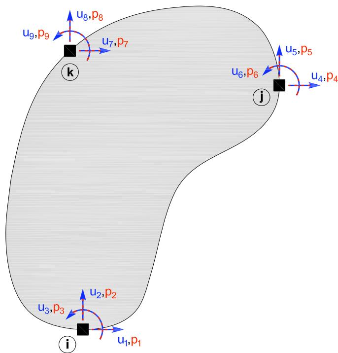
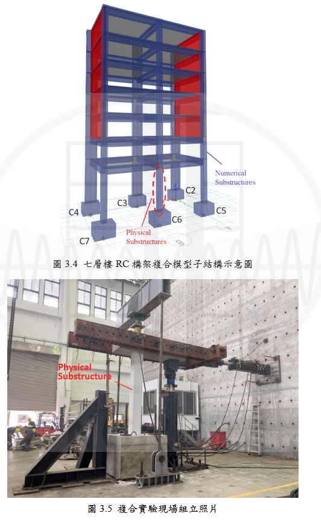
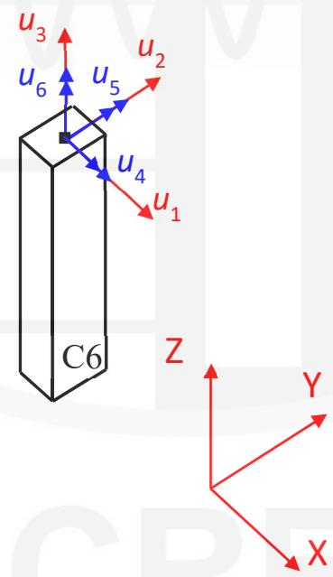
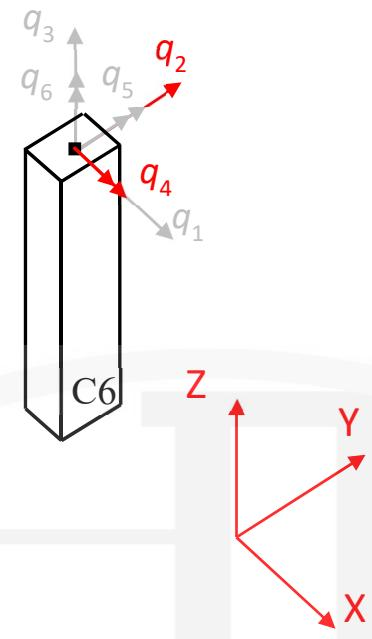

3.3. generic 实验单元
3.3.1. 命令
构建通用实验单元，支持任意节点数与自由度。这个单元不进行任何坐标变换。
site模式
expElement generic eleTag -node Ndi -dof dofNdi -dof dofNdj ... -site siteTag -initStif Kij <-iMod> <-noRayleigh> <-mass Mij> <-checkTime>
server模式
expElement generic eleTag -node Ndi -dof dofNdi -dof dofNdj ... -server ipPort <ipAddr> <-ssl> <-udp> <-dataSize size> -initStif Kij <-iMod> <-noRayleigh> <-mass Mij> <-checkTime>
参数 |
说明 |
|---|---|
$eleTag |
唯一单元标签 |
$Ndi |
端节点标签 |
\(dofNdi,\)dofNdj |
节点自由度 |
$siteTag |
站点标签 |
$Kij |
初始刚度矩阵（按行） |
-iMod |
Nakashima修正（可选） |
-noRayleigh |
关闭瑞雷阻尼（可选） |
$Mij |
质量矩阵（可选） |
其余 |
同beamColumn |
3.3.2. 示例
# 定义模型几何
set mass3 0.04
set mass4 0.02
# node $tag $xCrd $yCrd $mass
node 1 0.0 0.00
node 2 100.0 0.00
node 3 0.0 54.00 -mass $mass3 $mass3
node 4 100.0 54.00 -mass $mass4 $mass4
# 定义实验站点
expSite LocalSite 2 2
# 定义实验单元
expElement generic 1 -node 1 3 -dof 1 2 -dof 1 2 -site 2 -initStif 130 150 110 100 150 220 180 100 110 180 150 125 100 100 125 200
初始刚度矩阵： \( \mathbf{K}_{i} = \left[ \begin{array}{cccc} 130 &150 &110 &100\\ 150 &220 &180 &100 \\ 110 &180 &150 &125\\ 100 &100 &125 &200 \\ \end{array} \right] \)

3.3.3. 记录Recorder
全局力：force, forces, globalForce, globalForces
局部力：localForce, localForces
基本力：basicForce, basicForces, daqForce, daqForces
控制位移/速度/加速度
数据采集位移/速度/加速度
3.3.4. openfresco自带案例
案例位置 OpenFresco/EXAMPLES/OneByOneBayFrame/OpenSees/GenericExpElem /OneByOneBayFrame_Client.tcl
# expElement generic eleTag -node Ndi ... -dof dofNdi ... -site siteTag -initStif Kij <-iMod> <-noRayleigh> <-mass Mij>
expElement generic 1 -node 5 -dof 1 2 -server 8090 -initStif +1.500000E-02 +0.000000E+00 +0.000000E+00 +1.500000E-02
3.3.5. 完整示例(2025)
这里仅用了一个节点作为generic的单元，可以查看台湾2023的案例是两个节点作为generic单元。

4.2 OpenFresco 物理子结构环境之建立
图3.6为本文七层楼 RC结构之OpenFresco复合实验架构图，图中作为中介软件之 OpenFresco 透过四个阶段建立数值子结构与物理子结构间沟通之环境，分别为：实验元素(Experimental Element)、实验场域(ExperimentalSite)、实验组立(Experimental Setup)及实验控制系统(Experimental Control)。
另外亦须设定实验控制点(control point)以便设定输出指令及回授反应之讯号，而于脚本中之设定顺序为逆向设定，亦即依序设定实验控制点、实验控制系统、实验组立、实验场域及实验元素。
(1) 实验控制点(expControlPoint)
指令：expControlPoint \(cpTag \)rspType
此指令设定实验控制点之指令及回授讯号，共两个控制点，于\(cpTag 中设定实验控制点之编号，并于\)rspType 中设定物理量及其编号，位移讯号表示为 disp，速度讯号表示为 vel，加速度讯号表示为 accel，力讯号表示为force，时间讯号表示为 time。而本章实验为位移控制，输出大柱及小柱之位移命力，并回授真实频道及虚拟频道之位移及力讯号，验控制点(编号 1)及回授实验控制点(编号 2)设定如下
# Define experimental control(s)
# ExpControlPoint "cmd": cpTag <-node nodeTag> dof rspType <-fact f<-lim 1 u<-isRel>
expControlPoint 1 disp 2 disp
# ExpControlPoint "fdk": cpTag rspType
expControlPoint 2 1 disp 2 disp 1 force 2 force
(2) 实验控制系统(expControl)
指令：expControl MTSCsi \(tag \)cfgFileName \(rampTime -trialcp \)trialcp - outcp $outcp
根据第 2 章所述，OpenFresco 可连接数种不同之实验控制系统，而本文实验架构为使用 MTS CSIC 作为其控制系统，此指令即进行相关设定。其中，于$tag 中设定实验控制系统之编号，$cfgFileName 则是根据 MTS CSIC之设定档存放路径进行设定，其中需注意由电脑档案总管所复制之路径以「\」作为资料夹之区分符号，而于此指令之设定须将其改为 「/」 方可正确执行。于$rampTime 中设定ramptime 参数，该参数决定致动器作动之速率，依照试体或模型种类之差异有适合之 ramptime 参数， $trialcp 及 $outcp 则是设定前一步骤设定完成之实验控制点及回授实验控制点编号。本章之设定如下
expControl MTSCsi 1 "C:/Users/Administrator/Desktop/seven/six/sevenstoryone.mtscs" 1 -trialCP 1 -outCP 2
(3) 实验组立(expSetup)
指令：expSetup NoTransformation $setupTag <-control $ctrlTag> -dir $dirs -sizeTrialOut $trialSize $outSize -outForceFact $ outForceFacts
配合本文复合实验所使用之泛用型实验元素(generic ExpElement)，实验组立采用不进行坐标转换之 NoTransformation 实验组立，于$setupTag 设定实验组立之编号，$ctrlTag 则是设定前一步骤建立之实验控制系统编号，而$dirs 设定欲输出指令及读入回授讯号之实验元素自由度，本文控制二维一楼 C6 小柱之水平方向及旋转向自由度，亦即 Generic 实验元素的 2 号及 4号自由度，$trialSize及$outSize设定输出及读入之矩阵大小。本小节之设定如下
# Define experimental setup(s)
# ExpSetup "ExpSetup01": setupTag <-control ctrlTag> -dir dirs -sizeTrialOut to <factors>
expSetup NoTransformation 1 -control 1 -dir 2 4 -sizeTrialOut 6 6 -outForceFact 1 1 1 1 1 1
(4) 实验场域(expSite)
指令：expSite LocalSite \(siteTag \)setupTag
本文复合实验之数值分析软件与实验场为于在同一处，为同一区域连线，因此使用 LocalSite 指令，于\(siteTag 设定实验场域之编号，并于\)setupTag中设定前一步骤设定之实验组立编号。本章之设定如下
# Define experimental site(s)
# ExpSite "ExpSite01": siteTag setupTag
expSite LocalSite 1 1
(5) 实验元素(expElement)
指 令 ： expElement generic \(tag –node \)Ndi… – dof \(dofNdi… –dof\)dofNdj…–site \(siteTag –initStif \)Kij …
本文使用 OpenFresco 实验元素之泛用型实验元素(generic ExpElement)进行复合实验，该实验元素即代表物理子结构部分，于本章即代表一楼之C6小柱。于\(tag 中设定实验元素之编号， \)$ 123\( 中设定物理子结构柱之柱顶节点编号，本文之物理子结构柱顶节点为节点 21，\)dofNdi 则设定该节点以Generic元素建立之自由度方向，各节点皆须设定欲建立之自由度方向，而\(siteTag则是设定前一步骤设定之实验场域编号，最后于\)Kij中设定Generic元素之初始劲度矩阵，三维单柱初始劲度矩阵公式如下
台湾原本公式有误,多了负号，但是后面算的initStif是对的
图 4.6 为本实验之 Generic 元素示意图，于三维模型中将 C6 小柱以Generic 建立包含 1 个节点及 6 个自由度之实验元素。由于 Generic 实验元素之控制及回授自由度已建立在全域坐标系中，OpenFresco EEGeneric class将不再进行坐标转换，图4.7为 Generic 元素力回授示意图，红色及灰色表示物理及数值子结构自由度。

图 4.4 Generic 元素示意图

(红色及灰色表示物理及数值子结构自由度) 图 4.5 Generic 元素力回授示意图
(4.1)式表示三维单柱物理子结构之 Generic 初始进度矩阵。依照上述内容，
本小节之实验元素设定如下
# Define experimental element
# expElement generic $eleTag -node $Ndi -dof $dofNdi -dof $dofNdj ... -server $ipPort <$ipAddr> <-ssl> <-dataSize $size>
expElement generic 1000 -node 21 -dof 1 2 3 4 5 6 -site 1\
-initStif\
968650.1083 0 0 0 -1452975.162 0 \
0 968650.1083 0 1452975.162 0 0 \
0 0 645766738.9 0 0 0 \
0 1452975.162 0 2905950.325 0 0 \
-1452975.162 0 0 0 2905950.325 0 \
0 0 0 0 0 3410455.59
3.3.6. 参考
[1] 郑弘, 于允文. OpenFresco开放式实验架构在多自由度混合实验中的应用. 中国台湾: 国家地震工程研究中心（台湾）; 2025.